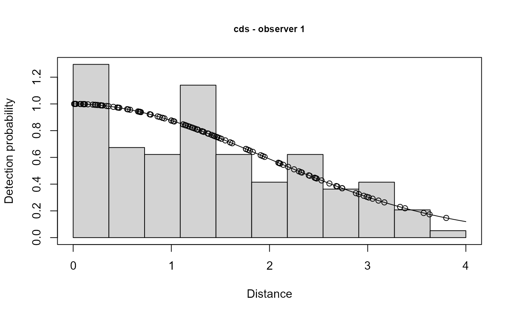

Fits a conventional distance sampling (CDS) (likelihood eq 6.6 in Laake and
Borchers 2004) or multi-covariate distance sampling (MCDS)(likelihood eq
6.14 in Laake and Borchers 2004) model for the detection function of
observed distance data. It only uses key functions and does not incorporate
adjustment functions as in CDS/MCDS analysis engines in DISTANCE (Marques
and Buckland 2004). Distance can be grouped (binned), ungrouped (unbinned)
or mixture of the two. This function is not called directly by the user and
is called from ddf,ddf.io, or ddf.trial.
Arguments
- dsmodel
model list with key function and scale formula if any
- mrmodel
not used
- data
data.frame; seeddffor details- method
analysis method; only needed if this function called from
ddf.ioorddf.trial- meta.data
listcontaining settings controlling data structure- control
listcontaining settings controlling model fitting- call
original function call if this function not called directly from
ddf(e.g., called viaddf.io)
Details
For a complete description of each of the calling arguments, see
ddf. The argument model in this function is the same
as dsmodel in ddf. The argument dataname is the name
of the dataframe specified by the argument data in ddf. The
arguments control,meta.data,and method are defined the
same as in ddf.
Note
If mixture of binned and unbinned distance, width must be set to be >= largest interval endpoint; this could be changed with a more complicated analysis; likewise, if all binned and bins overlap, the above must also hold; if bins don't overlap, width must be one of the interval endpoints; same holds for left truncation Although the mixture analysis works in principle it has not been tested via simulation.
References
Laake, J.L. and D.L. Borchers. 2004. Methods for incomplete detection at distance zero. In: Advanced Distance Sampling, eds. S.T. Buckland, D.R. Anderson, K.P. Burnham, J.L. Laake, D.L. Borchers, and L. Thomas. Oxford University Press.
Marques, F.F.C. and S.T. Buckland. 2004. Covariate models for the detection function. In: Advanced Distance Sampling, eds. S.T. Buckland, D.R. Anderson, K.P. Burnham, J.L. Laake, D.L. Borchers, and L. Thomas. Oxford University Press.
Examples
# ddf.ds is called when ddf is called with method="ds"
# \donttest{
data(book.tee.data)
region <- book.tee.data$book.tee.region
egdata <- book.tee.data$book.tee.dataframe
samples <- book.tee.data$book.tee.samples
obs <- book.tee.data$book.tee.obs
result <- ddf(dsmodel = ~mcds(key = "hn", formula = ~1),
data = egdata[egdata$observer==1, ], method = "ds",
meta.data = list(width = 4))
summary(result,se=TRUE)
#>
#> Summary for ds object
#> Number of observations : 124
#> Distance range : 0 - 4
#> AIC : 311.1385
#> Optimisation : mrds (nlminb)
#>
#> Detection function:
#> Half-normal key function
#>
#> Detection function parameters
#> Scale coefficient(s):
#> estimate se
#> (Intercept) 0.6632435 0.09981249
#>
#> Estimate SE CV
#> Average p 0.5842744 0.04637627 0.07937412
#> N in covered region 212.2290462 20.85130344 0.09824906
plot(result,main="cds - observer 1")

print(dht(result,region,samples,obs,options=list(varflag=0,group=TRUE),
se=TRUE))
#> Abundance and density estimates from distance sampling
#> Variance : R2, binomial
#>
#> Summary statistics
#>
#> Region Area CoveredArea Effort n k ER se.ER cv.ER
#> 1 1 1040 1040 130 72 6 0.5538462 0.02926903 0.05284685
#> 2 2 640 640 80 52 5 0.6500000 0.08292740 0.12758061
#> 3 Total 1680 1680 210 124 11 0.5904762 0.03641856 0.06167659
#>
#> Summary for clusters
#>
#> Abundance:
#> Region Estimate se cv lcl ucl df
#> 1 1 123.22977 13.54083 0.10988275 99.41771 152.7452 0
#> 2 2 88.99928 10.64090 0.11956159 70.46547 112.4078 0
#> 3 Total 212.22905 20.85130 0.09824906 175.13617 257.1780 0
#>
#> Density:
#> Region Estimate se cv lcl ucl df
#> 1 1 0.1184902 0.01302002 0.10988275 0.09559396 0.1468704 0
#> 2 2 0.1390614 0.01662640 0.11956159 0.11010230 0.1756372 0
#> 3 Total 0.1263268 0.01241149 0.09824906 0.10424772 0.1530821 0
#>
#> Summary for individuals
#>
#> Abundance:
#> Region Estimate se cv lcl ucl df
#> 1 1 391.9391 46.10793 0.1176405 311.4775 493.1858 0
#> 2 2 260.1517 33.65581 0.1293699 202.0987 334.8806 0
#> 3 Total 652.0909 67.40510 0.1033677 532.7888 798.1070 0
#>
#> Density:
#> Region Estimate se cv lcl ucl df
#> 1 1 0.3768645 0.04433455 0.1176405 0.2994976 0.4742171 0
#> 2 2 0.4064871 0.05258720 0.1293699 0.3157792 0.5232509 0
#> 3 Total 0.3881493 0.04012208 0.1033677 0.3171362 0.4750637 0
#>
#> Expected cluster size
#> Region Expected.S se.Expected.S cv.Expected.S
#> 1 1 3.180556 0.13362415 0.04201283
#> 2 2 2.923077 0.14443673 0.04941257
#> 3 Total 3.072581 0.09870565 0.03212467
print(ddf.gof(result))
#>
#> Goodness of fit results for ddf object
#>
#> Chi-square tests
#> [0,0.364] (0.364,0.727] (0.727,1.09] (1.09,1.45] (1.45,1.82]
#> Observed 25.000 13.000 12.000 22.000 12.000
#> Expected 19.181 18.522 17.270 15.549 13.518
#> Chisquare 1.765 1.646 1.608 2.677 0.170
#> (1.82,2.18] (2.18,2.55] (2.55,2.91] (2.91,3.27] (3.27,3.64] (3.64,4]
#> Observed 8.000 12.000 7.000 8.000 4.000 1.000
#> Expected 11.348 9.199 7.200 5.442 3.972 2.799
#> Chisquare 0.988 0.853 0.006 1.202 0.000 1.156
#> Total
#> Observed 124.000
#> Expected 124.000
#> Chisquare 12.071
#>
#> P = 0.20932 with 9 degrees of freedom
#>
#> Distance sampling Cramer-von Mises test (unweighted)
#> Test statistic = 0.0655753 p-value = 0.77897
# }